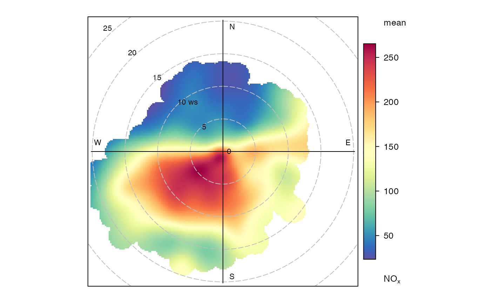

Function for plotting pollutant concentration in polar coordinates showing
concentration by wind speed (or another numeric variable) and direction. Mean
concentrations are calculated for wind speed-direction ‘bins’ (e.g.
0-1, 1-2 m/s,... and 0-10, 10-20 degrees etc.). To aid interpretation,
gam smoothing is carried out using mgcv.
polarPlot( mydata, pollutant = "nox", x = "ws", wd = "wd", type = "default", statistic = "mean", resolution = "fine", limits = NA, exclude.missing = TRUE, uncertainty = FALSE, percentile = NA, cols = "default", weights = c(0.25, 0.5, 0.75), min.bin = 1, mis.col = "grey", alpha = 1, upper = NA, angle.scale = 315, units = x, force.positive = TRUE, k = 100, normalise = FALSE, key.header = "", key.footer = pollutant, key.position = "right", key = TRUE, auto.text = TRUE, ws_spread = 0.5, wd_spread = 4, kernel = "gaussian", tau = 0.5, ... )
| mydata | A data frame minimally containing |
|---|---|
| pollutant | Mandatory. A pollutant name corresponding to a variable in a
data frame should be supplied e.g. |
| x | Name of variable to plot against wind direction in polar coordinates, the default is wind speed, “ws”. |
| wd | Name of wind direction field. |
| type |
It is also possible to choose Type can be up length two e.g. |
| statistic | The statistic that should be applied to each wind
speed/direction bin. Because of the smoothing involved, the colour scale
for some of these statistics is only to provide an indication of overall
pattern and should not be interpreted in concentration units e.g. for
|
| resolution | Two plot resolutions can be set: “normal” and “fine” (the default), for a smoother plot. It should be noted that plots with a “fine” resolution can take longer to render. |
| limits | The function does its best to choose sensible limits
automatically. However, there are circumstances when the user will wish to
set different ones. An example would be a series of plots showing each year
of data separately. The limits are set in the form |
| exclude.missing | Setting this option to |
| uncertainty | Should the uncertainty in the calculated surface be shown?
If |
| percentile | If
|
| cols | Colours to be used for plotting. Options include
“default”, “increment”, “heat”, “jet” and
|
| weights | At the edges of the plot there may only be a few data points
in each wind speed-direction interval, which could in some situations
distort the plot if the concentrations are high. An alternative to down-weighting these points they can be removed
altogether using |
| min.bin | The minimum number of points allowed in a wind speed/wind
direction bin. The default is 1. A value of two requires at least 2 valid
records in each bin an so on; bins with less than 2 valid records are set
to NA. Care should be taken when using a value > 1 because of the risk of
removing real data points. It is recommended to consider your data with
care. Also, the |
| mis.col | When |
| alpha | The alpha transparency to use for the plotting surface (a value
between 0 and 1 with zero being fully transparent and 1 fully opaque).
Setting a value below 1 can be useful when plotting surfaces on a map using
the package |
| upper | This sets the upper limit wind speed to be used. Often there are only a relatively few data points at very high wind speeds and plotting all of them can reduce the useful information in the plot. |
| angle.scale | The wind speed scale is by default shown at a 315 degree
angle. Sometimes the placement of the scale may interfere with an
interesting feature. The user can therefore set |
| units | The units shown on the polar axis scale. |
| force.positive | The default is |
| k | This is the smoothing parameter used by the |
| normalise | If |
| key.header | Adds additional text/labels to the scale key. For example,
passing the options |
| key.footer | see |
| key.position | Location where the scale key is to plotted. Allowed
arguments currently include |
| key | Fine control of the scale key via |
| auto.text | Either |
| ws_spread | The value of sigma used for Gaussian kernel weighting of
wind speed when |
| wd_spread | The value of sigma used for Gaussian kernel weighting of
wind direction when |
| kernel | Type of kernel used for the weighting procedure for when
correlation or regression techniques are used. Only |
| tau | The quantile to be estimated when |
| ... | Other graphical parameters passed onto |
As well as generating the plot itself, polarPlot also returns
an object of class ``openair''. The object includes three main components:
call, the command used to generate the plot; data, the data
frame of summarised information used to make the plot; and plot, the
plot itself. If retained, e.g. using output <- polarPlot(mydata,
"nox"), this output can be used to recover the data, reproduce or rework
the original plot or undertake further analysis.
An openair output can be manipulated using a number of generic operations,
including print, plot and summary.
polarPlot surface data can also be extracted directly using the
results, e.g. results(object) for output <-
polarPlot(mydata, "nox"). This returns a data frame with four set columns:
cond, conditioning based on type; u and v, the
translational vectors based on ws and wd; and the local
pollutant estimate.
The bivariate polar plot is a useful diagnostic tool for quickly gaining an idea of potential sources. Wind speed is one of the most useful variables to use to separate source types (see references). For example, ground-level concentrations resulting from buoyant plumes from chimney stacks tend to peak under higher wind speed conditions. Conversely, ground-level, non-buoyant plumes such as from road traffic, tend to have highest concentrations under low wind speed conditions. Other sources such as from aircraft engines also show differing characteristics by wind speed.
The function has been developed to allow variables other than wind speed to be plotted with wind direction in polar coordinates. The key issue is that the other variable plotted against wind direction should be discriminating in some way. For example, temperature can help reveal high-level sources brought down to ground level in unstable atmospheric conditions, or show the effect a source emission dependent on temperature e.g. biogenic isoprene.
The plots can vary considerably depending on how much smoothing is done. The
approach adopted here is based on the very flexible and capable mgcv
package that uses Generalized Additive Models. While methods do exist
to find an optimum level of smoothness, they are not necessarily useful. The
principal aim of polarPlot is as a graphical analysis rather than for
quantitative purposes. In this respect the smoothing aims to strike a balance
between revealing interesting (real) features and overly noisy data. The
defaults used in polarPlot are based on the analysis of data from many
different sources. More advanced users may wish to modify the code and adopt
other smoothing approaches.
Various statistics are possible to consider e.g. mean, maximum, median.
statistic = "max" is often useful for revealing sources. Pair-wise
statistics between two pollutants can also be calculated.
The function can also be used to compare two pollutant species through a
range of pair-wise statistics (see help on statistic) and Grange et
al. (2016) (open-access publication link below).
Wind direction is split up into 10 degree intervals and the other variable (e.g. wind speed) 30 intervals. These 2D bins are then used to calculate the statistics.
These plots often show interesting features at higher wind speeds (see
references below). For these conditions there can be very few measurements
and therefore greater uncertainty in the calculation of the surface. There
are several ways in which this issue can be tackled. First, it is possible to
avoid smoothing altogether and use polarFreq in the package
openair. Second, the effect of setting a minimum number of
measurements in each wind speed-direction bin can be examined through
min.bin. It is possible that a single point at high wind speed
conditions can strongly affect the surface prediction. Therefore, setting
min.bin = 3, for example, will remove all wind speed-direction bins
with fewer than 3 measurements before fitting the surface. Third,
consider setting uncertainty = TRUE. This option will show the
predicted surface together with upper and lower 95
which take account of the frequency of measurements.
Variants on polarPlot include polarAnnulus and
polarFreq.
Ashbaugh, L.L., Malm, W.C., Sadeh, W.Z., 1985. A residence time probability analysis of sulfur concentrations at ground canyon national park. Atmospheric Environment 19 (8), 1263-1270.
Carslaw, D.C., Beevers, S.D, Ropkins, K and M.C. Bell (2006). Detecting and quantifying aircraft and other on-airport contributions to ambient nitrogen oxides in the vicinity of a large international airport. Atmospheric Environment. 40/28 pp 5424-5434.
Carslaw, D.C., & Beevers, S.D. (2013). Characterising and understanding emission sources using bivariate polar plots and k-means clustering. Environmental Modelling & Software, 40, 325-329. doi:10.1016/j.envsoft.2012.09.005
Henry, R.C., Chang, Y.S., Spiegelman, C.H., 2002. Locating nearby sources of air pollution by nonparametric regression of atmospheric concentrations on wind direction. Atmospheric Environment 36 (13), 2237-2244.
Henry, R., Norris, G.A., Vedantham, R., Turner, J.R., 2009. Source region identification using Kernel smoothing. Environ. Sci. Technol. 43 (11), 4090e4097. http:// dx.doi.org/10.1021/es8011723.
Uria-Tellaetxe, I. and D.C. Carslaw (2014). Source identification using a conditional bivariate Probability function. Environmental Modelling & Software, Vol. 59, 1-9.
Westmoreland, E.J., N. Carslaw, D.C. Carslaw, A. Gillah and E. Bates (2007). Analysis of air quality within a street canyon using statistical and dispersion modelling techniques. Atmospheric Environment. Vol. 41(39), pp. 9195-9205.
Yu, K.N., Cheung, Y.P., Cheung, T., Henry, R.C., 2004. Identifying the impact of large urban airports on local air quality by nonparametric regression. Atmospheric Environment 38 (27), 4501-4507.
Grange, S. K., Carslaw, D. C., & Lewis, A. C. 2016. Source apportionment advances with bivariate polar plots, correlation, and regression techniques. Atmospheric Environment. 145, 128-134. https://www.sciencedirect.com/science/article/pii/S1352231016307166
The openair package for many more functions for analysing air pollution data.
David Carslaw
# Use openair 'mydata' # basic plot polarPlot(openair::mydata, pollutant = "nox")  if (FALSE) { # polarPlots by year on same scale polarPlot(mydata, pollutant = "so2", type = "year", main = "polarPlot of so2") # set minimum number of bins to be used to see if pattern remains similar polarPlot(mydata, pollutant = "nox", min.bin = 3) # plot by day of the week polarPlot(mydata, pollutant = "pm10", type = "weekday") # show the 95% confidence intervals in the surface fitting polarPlot(mydata, pollutant = "so2", uncertainty = TRUE) # Pair-wise statistics # Pearson correlation polarPlot(mydata, pollutant = c("pm25", "pm10"), statistic = "r") # Robust regression slope, takes a bit of time polarPlot(mydata, pollutant = c("pm25", "pm10"), statistic = "robust.slope") # Least squares regression works too but it is not recommended, use robust # regression # polarPlot(mydata, pollutant = c("pm25", "pm10"), statistic = "slope") }